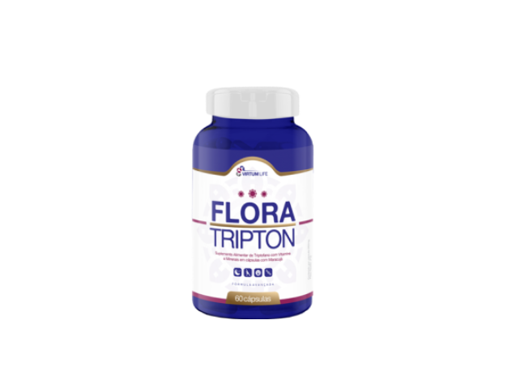

Virtumlife
Virtumlife
A doença que mata de forma lenta, tem se alastrado e feito as vítimas terem mudanças drásticas na vida social.
Experimentar Tratamento!(1756 votos)

Vontade de ficar deitado, desânimo completo com a rotina, com os compromissos e com a própria vida, dificuldades em pegar no sono e de levantar pela manhã, são alguns dos males provocados pelas doenças do século XXI.
A rotina das pessoas se tornou cada vez mais corrida, pessoas que não tem tempo para nada, não tem tempo para os filhos e muito menos para cuidar da saúde, seja ela física ou emocional.
Com isso, a pressão excessiva desencadeia doenças psicológicas em massa, prejudicando o andamento da rotina e diminuindo a qualidade de vida. Infelizmente, os tratamentos mais conhecidos para esses problemas são muitas vezes ineficientes, feitos por meio de medicamentos químicos perigosos e com forte risco de causar dependência.
Isso deixa milhares de pessoas em uma situação delicada, viver uma vida prejudicada e sem tratamento, ou buscar ajuda em medicações que viciam e muitas vezes não resolvem o problema, traz um transtorno que poderia ser evitado com atitudes simples.
No Brasil quase 12 milhões das pessoas sofrem com a doença, colocando o país no topo do ranking no número de casos de depressão na América Latina, segundo a Organização Mundial da Saúde (OMS).
Neste sentido, cientistas de todo mundo têm se dedicado, nas últimas décadas, há pesquisas para encontrar novas soluções que promovam o bem-estar físico e emocional necessário para uma vida saudável.
Todo esforço científico gerou frutos que tem chamado a atenção dos neurocientistas e psiquiatras de todo o mundo.
Após anos de estudos, cientistas de uma universidade brasileira desenvolveram um produto que vem se destacando no tratamento de doenças da mente.
O produto tem um nome e tem uma característica bem única, os criadores pensaram nesse nome para facilitar os pacientes na hora das crises, a lembrar daquele que pode salvar a vida deles, o produto chama “FLORATRIPTON”.
O maior medo das pessoas que tomam remédios controlados são as sequelas que os mesmos podem causar, danos no cérebro e na saúde.
O “FLORATRIPTON” é um produto totalmente natural e que não apresenta nenhum efeito colateral devido a sua fórmula ser totalmente natural.
Então, a fim de desenvolver um produto natural, mas que tivesse tecnologia avançada e sem efeitos rebotes, eles chegaram a essa maravilha.
Só ele é capaz de te mostrar a saída para essa escuridão que assola milhares de pessoas.
“No dia 25 de Março de 2016 eu tive uma das melhores notícias da minha vida, que eu iria ser mãe, e como toda mulher sonha em ser mãe, eu fiquei muito feliz e a minha primeira reação foi anunciar pra todo mundo, postei no Instagram e Facebook, queria que todos soubessem da minha felicidade, e eu pude perceber o quanto é bom ser feliz e sentir coisas boas.
No terceiro mês de gravidez eu passei por um susto muito grande que abalou muito meu psicológico e eu comecei a ter reações na gravidez, e foram dias de muitas dores e noites sem dormir, mas enfim, tudo passou e eis que meu filho nasceu, Marcos Felipe, uma criança linda e saudável, cheia de vida, de sorriso fácil, que ia no colo de qualquer pessoa sem estranhar.
Quando ele fez 4 meses de vida eu comecei a sentir sentimentos estranhos, vontade de só ficar deitada, cansada o tempo todo e não queria mais sair de casa, achei que fosse anemia, e procurei um médico, ele me passou vários remédios mas nada adiantou, e eu só queria chorar e ficar trancada no quarto, não queria mais brincar com meu filho, e ficava muito agressiva, sem paciência, eu tentava lembrar de algo que me fizesse ficar feliz, algum acontecimento, mas só vinha coisas ruins na cabeça, vontade de morrer e matar meu filho.
Meu marido muito preocupado me levou pra igreja, vários pastores iam lá na minha casa orar comigo, mas eu tinha resistência em querer aceitar.
Foi então que meu marido me levou ao Psiquiatra, mesmo forçada eu fui, chegando la ele me diagnosticou com DEPRESSÃO PÓS PARTO GRAU 4.
O médico disse que meu tratamento seria muito delicado e que eu precisaria fazer várias consultas e tomar medicamentos pesados para depressão, que eu teria variação de humor constante, e que esses medicamentos poderiam desenvolver gastrite e problemas no estômago.
Eu concordei ali na hora, mas quando cheguei no carro eu falei para meu marido que não iria tomar nada daqueles remédios por que iria me fazer mais mal ainda.
Foi quando meu marido descobriu um remédio que diziam ser natural chamado “FLORATRIPTON”.
No início ele começou a me dar sem eu saber, misturava na água, na comida, e eu não via, mas em menos de 1 mês eu mudei completamente, voltei a praticar esportes, voltei a cuidar do meu filho, voltei a amar meu filho e pude desfrutar dos melhores momentos do crescimento dele, e pude desfrutar de uma vida sem depressão e sem vontade de tirar minha vida.
Hoje posso dizer que o FLORATRIPTON salvou minha vida, ou melhor, ele me deu uma nova vida.”
Testado em 5.467 pessoas de ambos os sexos e diferentes idades antes de ser oficialmente lançado ao mercado, FLORATRIPTON atingiu os resultados esperados e satisfatórios.
Com eficácia impressionantes de 87,4% dos casos.
Sem contra indicações, qualquer pessoa, acima de 12 anos, pode usar o FLORATRIPTON, mesmo se for adolescente até pessoas idosas também pode tomar sem medo de efeitos colaterais.
E acima de tudo o FLORATRIPTON não precisa de receita médica, pois é um suplemento alimentar, 100% natural, sem contra indicações e sem efeitos colaterais.
Esse produto possui registro no Ministério da Saúde e é autorizado pela Anvisa Nº: 6.04.572-1. Isso passa a garantia necessária que o consumidor está diante de um produto que realmente é eficaz e que não é prejudicial.
Para obter bons resultados, apenas 2 cápsulas por dia deste produto natural é o suficiente. Toma-se uma pela manhã e uma à noite.
ATENÇÃO, CUIDADO AO REALIZAR SUA COMPRA DO FLORATRIPTON!!
Somente no site oficial https://www.floratripton.com/ você encontra o produto original. Devido ao grande índice de pirataria do produto, os produtores verdadeiros fizeram descontos especiais que somente no site do FLORATRIPTON você consegue adquirir. Evite piratarias.
Vale a pena lembrar que não é vendido no Mercado Livre e sites relacionados.